原文连接:https://www.cnblogs.com/zmdComeOn/p/11669111.html
django默认是有一个admin的后台管理模块，但是丑，功能也不齐全，但是大神给我们已经集成好了xadmin后台，我们拿来用即可，但是呢，django已经升级到2.1版本了，xadmin貌似跟不上节奏，那么在集成过程中咱就一步一步填坑吧，这也是一种学习的过程，遇到错误，找到错误的地方，看看django最新升级都修改了那些，去掉了那些，把相应出错的地方替换即可。
xadmin源码地址：https://github.com/sshwsfc/xadmin
下载并解压：
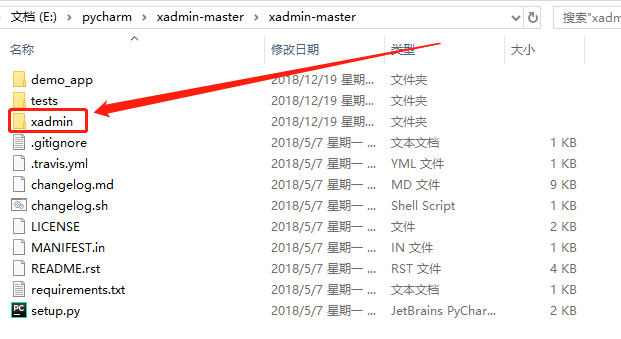
我们用到的是xadmin文件夹，将xadmin复制到项目的根目录，与项目同级别。
安装依赖库：
激活项目的虚拟环境，cd 到解压的 xadmin-master目录，运行一下代码
|
1
|
pip3 install -r requirements.txt |
在项目settings.py设置文件中引入：
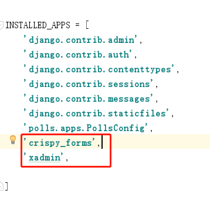
在项目的urls.py中设置
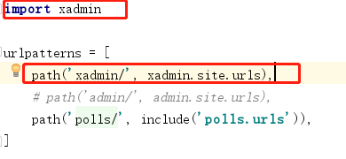
然后运行：python manage.py makemigrations 建立数据库迁移文件
这个时候就会引出一系列的错误提示
错误一：关联关系ForeignKey引发的错误，打开xadmin文件中的模型文件models.py，
凡是出现关联关系字段的地方全部加上on_delete=models.CASCADE , 如下图所示：
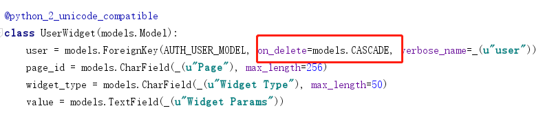
错误二：模块包名称合并修改引发的错误
错误提示：ModuleNotFoundError: No module named'django.core.urlresolvers'
这是因为django2.1把from django.core.urlresolvers修改成了django.urls
那么如图所示将 from django.core.urlresolvers import NoReverseMatch, reverse
修改为:from django.urls import NoReverseMatch, reverse
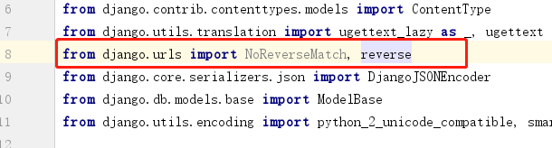
错误三：出现如下错误提示
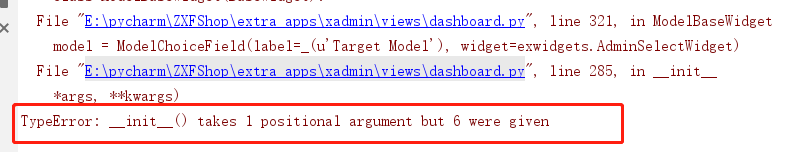
这是因为，django2.1.1的 forms表单初始化仅一个参数，将 forms.Field.__init__(self, required,widget, label, initial, help_text, *args, **kwargs) 修改为如图所示：
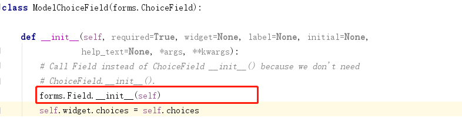
错误四：ImportError: cannot import name 'login' from 'django.contrib.auth.views'
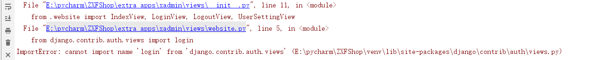
解决办法：

# 将 website.py 中的
from django.contrib.auth.views import login
from django.contrib.auth.views import logout
# 修改为
from django.contrib.auth import authenticate, login, logout错误五：ImportError: cannot import name 'QUERY_TERMS' from 'django.db.models.sql.query'
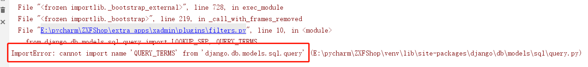
解决办法：
|
1
2
3
4
5
6
7
8
9
10
11
12
13
|
# django2.1.1版本将xadmin\plugins\filters.py文件中的from django.db.models.sql.query import LOOKUP_SEP, QUERY_TERMS# 修改为from django.db.models.sql.query import LOOKUP_SEP, Query# 在Django2.0版本中把from django.db.models.sql.query import LOOKUP_SEP, QUERY_TERMS# 修改为：from django.db.models.sql.query import LOOKUP_SEPfrom django.db.models.sql.constants import QUERY_TERMS |
错误六：ModuleNotFoundError: No module named 'django.contrib.formtools' 导入fromtools错误，版本太低
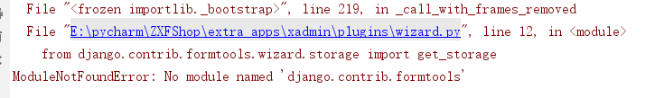
解决方案：
|
1
2
3
4
5
|
# 卸载旧版本pip uninstall django-formtools# 安装新版本pip install django-formtools |
错误七：
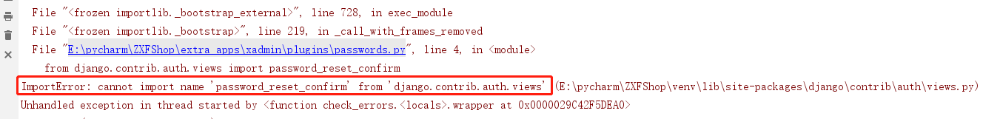
解决方案：
|
1
2
3
4
5
|
# 把xadmin\plugins\password.py中的from django.contrib.auth.views import password_reset_confirm修改为：from django.contrib.auth.views import PasswordResetConfirmView |
再把位于75行左右 return后的 password_reset_confirm修改为 PasswordResetConfirmView，如下图所示
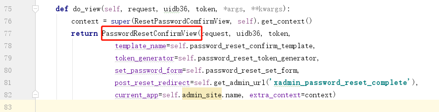
错误八：AttributeError: 'Settings' object has no attribute 'MIDDLEWARE_CLASSES'
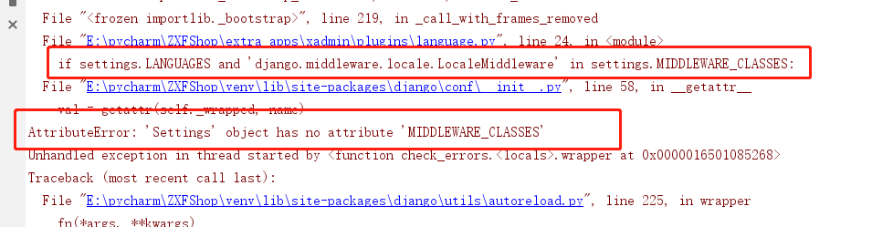
解决办法：
|
1
2
3
4
5
6
7
|
# 将xadmin\plugins\language.py 中的if settings.LANGUAGES and 'django.middleware.locale.LocaleMiddleware' in settings.MIDDLEWARE_CLASSES:修改为：if settings.LANGUAGES and 'django.middleware.locale.LocaleMiddleware' in settings.MIDDLEWARE: |
最后运行：python manage.py makemigrations 创建迁移数据文件
再运行：python manage.py migrate 迁移数据库
如果在以上过程中出现类似错误，请依照错误相应修改，错误提示的先后顺序或许不一样，但是请仔细阅读错误提示代码。